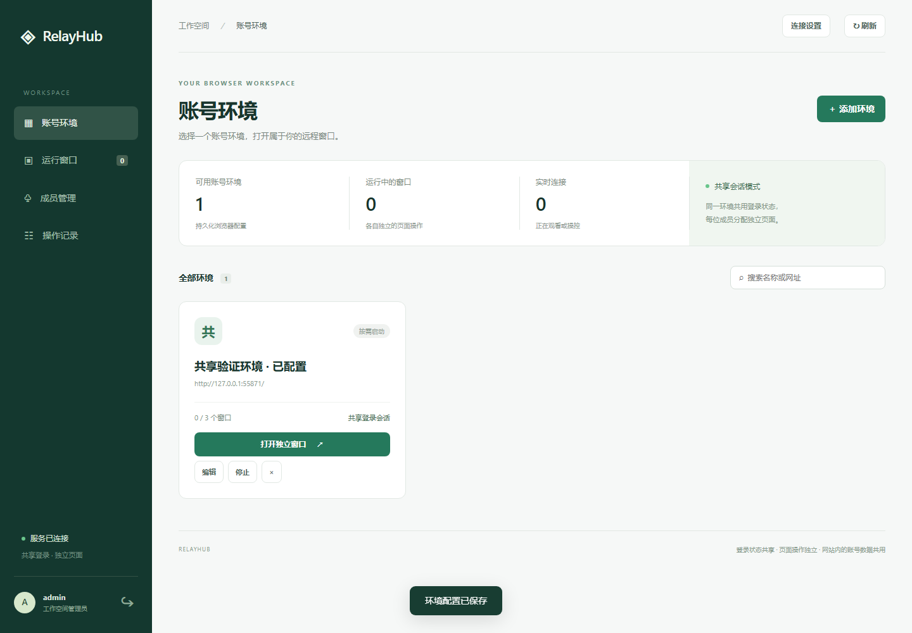
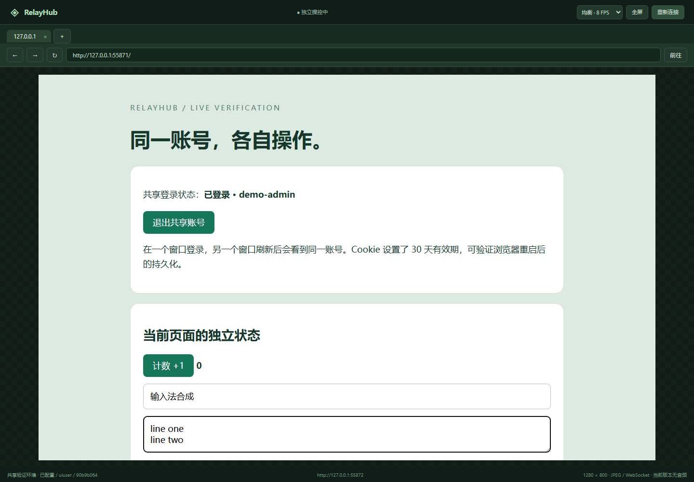

共享登录，独立窗口
同一环境下共享网站登录状态，每位成员拥有自己的页面、导航和输入通道。
YOUR SHARED BROWSER WORKSPACE
把网站留在真实浏览器里，把独立的工作窗口交给每个人。
管理员登录一次，成员在自己的页面中点击、输入、探索。
GitHub Pages 在线工作台 · 连接你部署的 RelayHub 服务后开始操作
01 / THE WORKSPACE
创建账号环境、分配成员、查看运行窗口。
把重复登录留给服务器，把操作空间留给成员。

同一环境下共享网站登录状态，每位成员拥有自己的页面、导航和输入通道。
服务器运行真实 Chromium，传输页面画面，直接使用原网站已有的功能与交互。
分配环境、只读观察、收回操控权、释放窗口。无连接窗口可按配置自动回收。
02 / ONE SESSION, MANY PAGES
一个持久化 BrowserContext 保存登录，多个 Page 分别接收成员操作。鼠标和键盘按页面定向发送。
共享登录也意味着共享网站账号的数据与权限。页面操作独立，网站内的历史、文件和额度仍可能共用。
创建环境，保存持久化浏览器资料。
每个人进入自己独立的远程窗口。
画面和操作归属各自的页面。
03 / YOUR OWN WINDOW
支持鼠标、滚轮、键盘、中文输入与文本粘贴。关联弹窗跟随发起它的窗口，临时断线后可重新连接。
当前版本无音频。实际帧率取决于页面变化、网络与渲染负载。

04 / MAKE IT YOURS
准备 Node.js 24+，运行项目。内置验证站可以直接检查“两名成员、共享登录、独立操作”。
git clone -b page https://github.com/xieguu/share-account-set.git
cd share-account-set
npm ci
npm run setup
npx playwright install chromium
npm run dev本地浏览器测试 17 项通过。已验证共享登录、独立输入、权限、重连和画面流控；音频、WebRTC 与多节点调度尚未实现。
查看验证记录 ↗